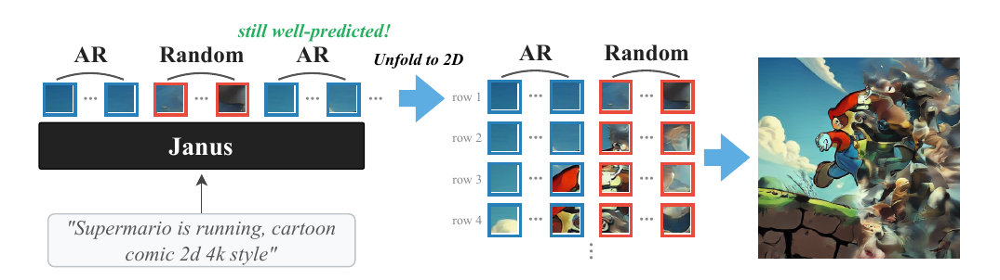
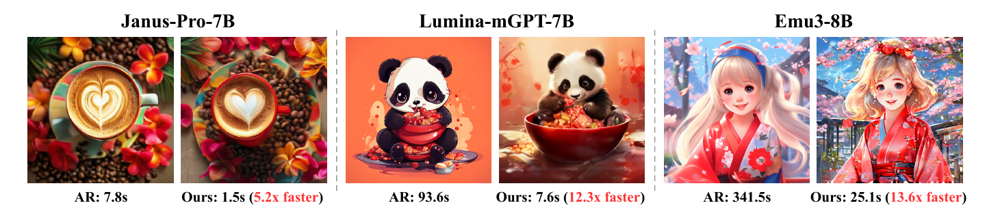

Autoregressive models excel in visual generation by treating images as 1D sequences of discrete tokens, mirroring language modeling. However, this flattening discards the intrinsic 2D spatial locality of visual signals, creating severe computational bottlenecks during inference.
We introduce Spatially Speculative Decoding (SSD), a framework that aligns the predictive objective with the natural geometry of images. Rather than predicting only the immediate next token in a 1D sequence, our model simultaneously predicts the adjacent horizontal token and the token directly below it. By capitalizing on this 2D spatial correlation, spatially speculative decoding overcomes the memory wall in visual inference.
Our approach accelerates autoregressive image generation by up to 13.3× while maintaining high fidelity on DPG-Bench and GenEval. Our results suggest that respecting the underlying geometry of vision unlocks massive computational efficiencies, paving the way for real-time, high-resolution autoregressive generative models.
A lightweight 2D draft head proposes the horizontal and the vertical neighbor jointly; the base model then verifies an entire spatial block in parallel.

SSD matches the fidelity of the AR baseline on DPG-Bench and GenEval while running over an order of magnitude faster.

@article{xiang2026ssd,
title = {SSD: Spatially Speculative Decoding Accelerates Autoregressive Image Generation},
author = {Xiang, Shilong and Zhang, Zirui and Yu, Lijun and Mao, Chengzhi},
journal = {arXiv preprint},
year = {2026}
}